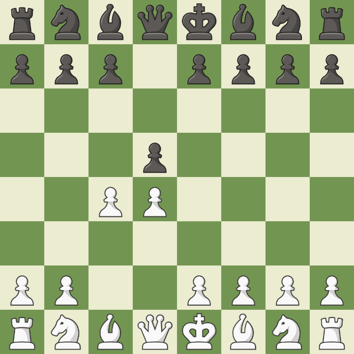

Gambito da Dama
Inicia com 1.d4 d5 2.c4. As brancas oferecem temporariamente um peão para ganhar controle do centro. É uma das aberturas mais clássicas e estratégicas do xadrez, podendo levar a posições muito ricas em planos a longo prazo.
